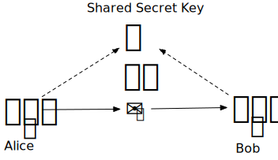
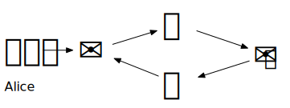
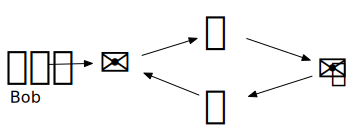
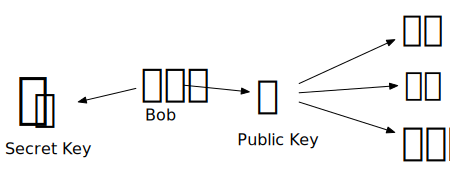

Luigi R. Viggiano
<luigi.viggiano@gmail.com>
https://www.linkedin.com/in/viggiano/
First decentralized digital currency.bitcoin.org
A purely peer-to-peer version of electronic cash would allow online payments to be sent directly from one party to another without going through a financial institution.Satoshi Nakamoto - the bitcoin whitepaper
The first time in history we have a digital asset that can be transferred but cannot be duplicated.
Bitcoin is...
A perfect fit for money!
Cryptography is the practice of techniques for secure communication in the presence of third parties called adversaries. More generally, cryptography is about constructing and analyzing protocols that prevent third parties or the public from reading private messages.Wikipedia
The encryption key is shared between Alice and Bob, and they need to keep it secret.

How can they safely exchange the secret shared key?
Alice and Bob will generate two complimentary keys.
 
What can be encrypted with one key can be decrypted with the other key.
One key is labeled "Secret Key" and kept safe and secret.

The other key is labeled "Public Key" and is given to everyone.